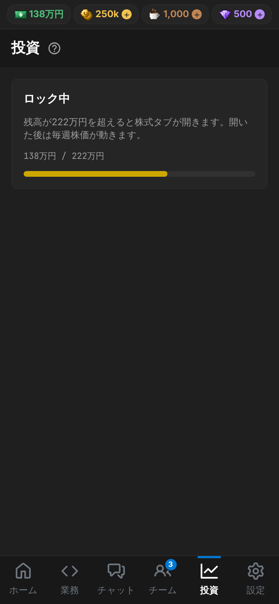
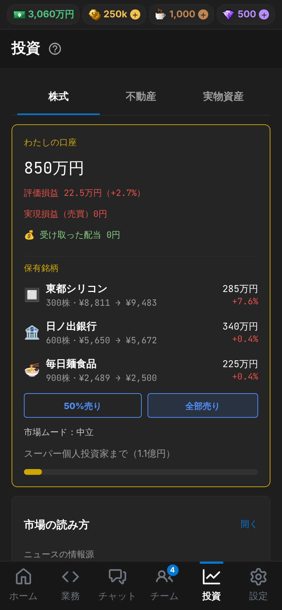
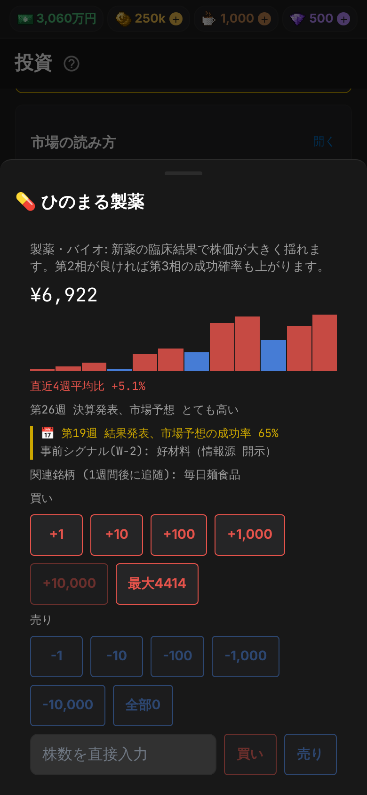
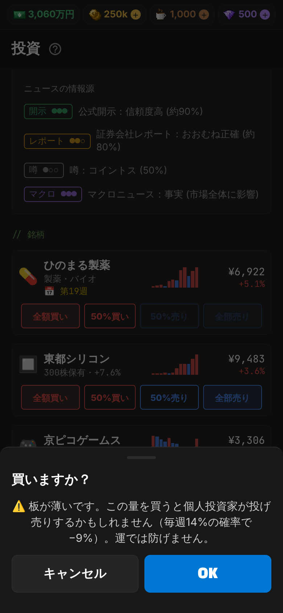
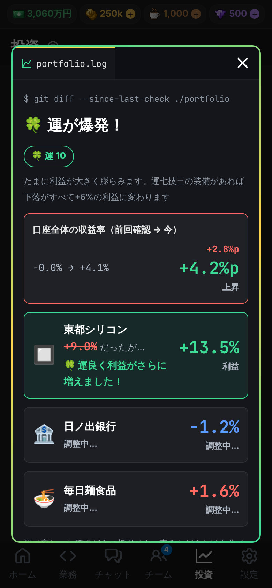
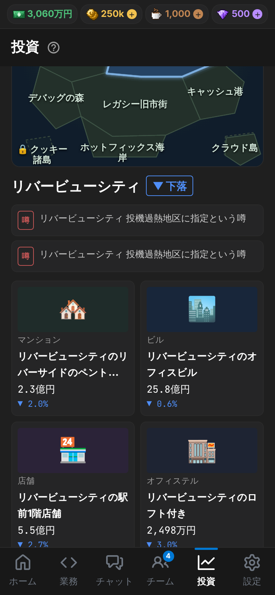
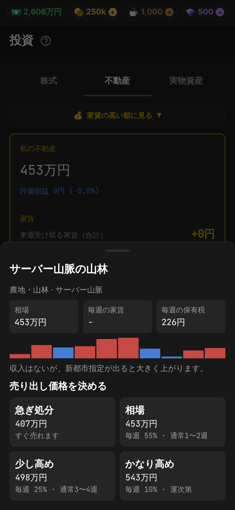
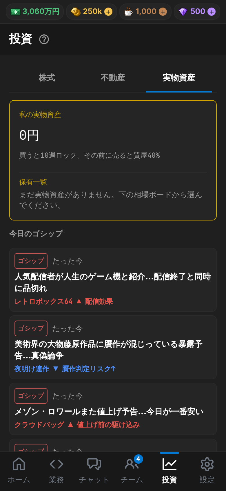
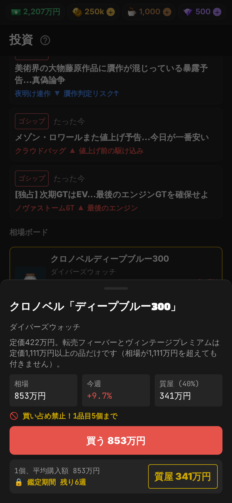
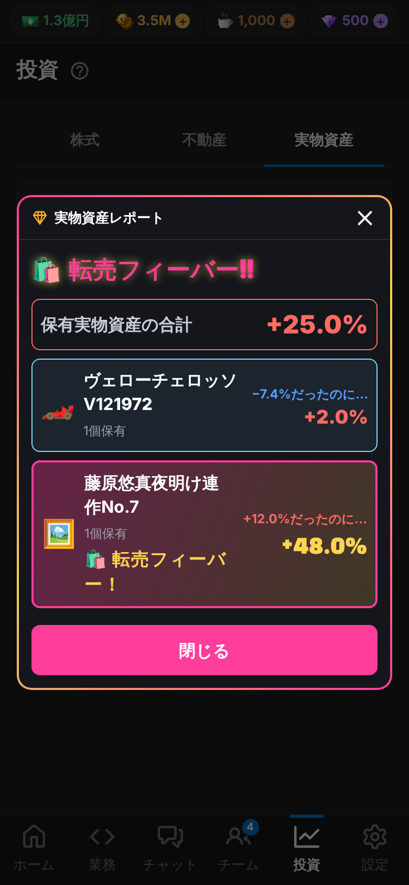

攻略本 › 投資
投資の攻略
株10銘柄、不動産42軒、実物資産9品目のしくみと収益率、おすすめの運用法と破産するパターン、投資エンディングまで
- 💰 残高が222万円になると、投資タブの株式、不動産、実物資産が一度に開きます。
- 📈 株は何の情報もなしに買うと元本どまりになるように作った市場です。お金を稼ぐのはニュースの出どころを読む人です。開示（90%）は信じて、ゴシップ（50%）はコイン投げです。
- 🏠 不動産は遅いけれど着実です（80週持つと相場だけでおおよそ +25〜50%、家賃は別）。大きな好材料が1発来ると3週で最大2.2倍。
- ⌚ 実物資産は1週で25%まで上下するジェットコースターです。買うと10週のあいだ売れず、新車は買った瞬間に20%が飛んでいきます。
- 🏆 投資エンディング: スーパー個人投資家（株1.1億円）、島のオーナー3種（島の物件3軒）、ヒロインの好み6種（新婚中に彼女が望むものすべて）。
投資タブはいつ開く？ 🔓#
下のタブバーの投資は最初ロック中です。周回中に残高が222万円を超えた瞬間（週の締めのとき、またはそのお金を持って投資タブに入るとその場で）、株式、不動産、実物資産が同時に開き、週の締めで開くとログに📈 残高222万円突破！株式タブが開きました。と出ます。そのあとは毎週の締めごとに3つの市場が1週ずつ動きます。

| サブタブ | 何を買う | 性格 | 売り方 |
|---|---|---|---|
| 📈 株式 | 10銘柄 | ニュースを読めば稼げる実力ゲーム | いつでもすぐ（手数料0.15%） |
| 🏠 不動産 | 大陸マップの固定物件42軒 | ゆっくり上がって家賃が入る | 売り出し価格を決めて出す（急ぎ処分はすぐ、-10%） |
| ⌚ 実物資産 | 9品目（品目ごとに最大5個） | 1週で大きく上下する流行の品 | 鑑定期間10週のあと相場で（その前は質屋で40%） |
周回の最初の残高は33.3万円です。周回ボーナス親からの仕送りをIII段階（累計 +200万円）まで上げると233万円でスタートするので、第1週に投資タブに入った瞬間にすぐ開きます。スーパー個人投資家は始めるのが早いほど圧倒的に有利だからです（下の表）。
純資産と階級 💳#
ゲームの言う純資産（総資産）は現金、株、不動産、実物資産を全部足した値です。この値で名刺カードとホームの顔の階級が決まり（顔の小物がばんそうこうと汗 → なし → 眼鏡とネクタイ → サングラスと金のネックレス → 片眼鏡と口ひげ → 王冠の順に変わります）、クッキー諸島（5.6億円）が開きます。
| 階級 | 純資産 | 階級 | 純資産 |
|---|---|---|---|
| 金欠インターン | 0円〜 | 成金 | 1.1億円〜 |
| 貯金の妖精 | 111万円〜 | ビルオーナー | 5.6億円〜 |
| 個人投資家 | 556万円〜 | 大富豪 | 11.1億円〜 |
| 貯金上手な社員 | 1,111万円〜 | 財閥 | 111億円〜 |
| 隠れ金持ち | 5,556万円〜 | 超富豪クラブ会長 | 1,111億円〜 |
ちなみに実績1,111万円貯金は純資産ではなく現金の残高1,111万円です。
📈 株式: ニュースを読む人が勝つ#

10銘柄をひと目で#
変動性は1週でふつうどれくらい揺れるか、ベータは市場の雰囲気にどれくらい流されるかです。配当は4週持つごとに1回出る金額（株価に対して）です。
| 銘柄 | 業種 | 最初の価格 | 週の変動性 | ベータ | 配当（4週ごと） | 予定イベント |
|---|---|---|---|---|---|---|
| 💊 ひのまる製薬 | 製薬・バイオ | ¥5,333 | 6% | 0.6 | なし | 新薬の第3相（±29.7%） |
| 🔲 東都シリコン | 半導体 | ¥8,000 | 3.5% | 1.4 | 0.12% | なし |
| 🎮 京ピコゲームス | ゲーム | ¥3,444 | 5% | 1.1 | なし | 新作リリース（±15.0%） |
| 🏦 日ノ出銀行 | 銀行 | ¥5,778 | 1.5% | 0.7 | 0.37% | なし |
| 🚗 豊川モーターズ | 電気自動車 | ¥10,556 | 4.5% | 1.3 | なし | なし |
| 🍜 毎日麺食品 | 食品 | ¥2,333 | 1.2% | 0.3 | 0.31% | なし |
| 🚢 瀬戸波造船 | 造船 | ¥2,000 | 4% | 1.0 | なし | 大型受注（±16.2%） |
| 🎤 ほしぞらプロ | エンタメ | ¥4,444 | 5% | 0.9 | なし | 看板グループのカムバック（±13.9%） |
| ☁️ 雲海クラウド | IT・クラウド | ¥7,333 | 3% | 1.2 | なし | 大型受注（±16.2%） |
| 📡 日の本テレコム | 通信 | ¥3,778 | 1% | 0.4 | 0.34% | なし |
最初の価格は毎周回同じです。配当を1年（52週）に換算すると、日ノ出銀行4.8%、日の本テレコム4.4%、毎日麺食品4.0%、東都シリコン1.6%です。
株価はこう動きます#
株価は基本価値、過熱、イベントの期待感の3つが合わさって動きます。
- 基本価値: 毎週少しずつ上下し（ノイズ）、会社ごとに隠れた今期のトレンドのぶんだけ少し引っ張られます。市場の雰囲気がよければベータのぶん一緒に上がります。
- 過熱: ニュースに人々が過剰に反応した部分です。毎週40%ずつ消えます。だから大きく跳ねた株価は一部戻ってきます。
- イベントの期待感: 予定イベントが近づくと先に上がっておき、結果が出た瞬間に消えて結果が反映されます。
ニュースの出どころ4つ: これがすべて 📰#
市場ニュースごとに出どころのラベルが付き、出どころごとに当たる確率が固定です。画面の市場の読み方を開いても同じ内容が出ます。
| 出どころ | 当たる確率 | いつ出る | 人々の反応 |
|---|---|---|---|
| 開示 | 90% | イベントの予告、事前のシグナル（40%）、結果、決算発表 | 結果そのもの |
| レポート | 78% | 四半期の5〜11週目、銘柄ごとに週16% | ふつう |
| ゴシップ | 50% | レポートが出ない週は銘柄ごとに5%、イベントの事前のシグナル（60%、このときは55%） | いちばん大きい |
| マクロ | 100% | 毎週12%: AI投資ブーム、景気後退の懸念、政策金利の引き上げ、利下げ期待 | 市場の雰囲気全体 |
市場の雰囲気は悲観、弱含み、中立、堅調、楽観の5段階で見え、時間がたつと少しずつ中立に戻ります。AI投資ブーム、景気後退は雰囲気を大きく、金利のニュースは少し動かします。半導体、電気自動車、クラウドのようにベータが大きい銘柄がいちばん大きく流されます。
ゴシップは当たる確率がちょうど半々なのに、人々はレポートより大きく反応します。ゴシップに乗って買った株価は、翌週から過熱が抜けて戻ってきやすいです。いいゴシップが出た銘柄を買うは、80週後ふつう-7.7%です。
決算発表: 期待との差で動きます#
決算はキャリアの13週ごと（第13、26、39、52、65、78、91週）の週の締めに出ます。銘柄の詳細に第N週に決算発表、市場の期待 とても低い〜とても高いが見えます。
- 隠れたトレンド会社ごとに今期のトレンドが隠れています。レポートが78%の確率でその方向を教えてくれます。
- 市場の期待レポート、ゴシップが出るたびに期待が少しずつ動きます（ゴシップはもっと少し）。画面に見える値です。
- 発表株価は実際のトレンドと市場の期待の差のぶん動き、変動性の大きい銘柄ほど大きく動きます。そこに過熱が少し上乗せされます（すぐ抜けます）。実際が期待より明らかによければアーニングサプライズ！、明らかに悪ければアーニングショック…、近ければ期待どおり。
- 次の四半期市場は今期がよければ次の期もいいだろうと大きく期待しますが、実際のトレンドはそれほど続きません。だから大当たりの四半期のあとは期待が高すぎてショックが起きやすいです。
四半期の後半（8〜12週目）にレポートが同じ方向で何度も出たのに、市場の期待がまだふつうならチャンスです。逆に発表の直後に急騰した銘柄は、もう過熱が乗った価格なので遅いです。
予定イベント: 開示の事前のシグナルがカギ ⭐#
ひのまる製薬、京ピコゲームス、瀬戸波造船、ほしぞらプロ、雲海クラウドは、イベントがないとき毎週6%の確率で4週後に発表の予告が出ます。結果は予告の瞬間に50:50ですでに決まっています。

| 残りの週 | 何が起きる | 株価 |
|---|---|---|
| 4週（予告） | 開示で予告、市場の予想成功率50% | 目標の期待感の30%を反映 |
| 3週 | — | 50%を反映 |
| 2週 | 事前のシグナル: 40%は開示（90%当たる）、60%はゴシップ（55%当たる）。前向きなら市場の予想65%、否定的なら35% | 75%を反映 |
| 1週 | — | 100%を反映 |
| 結果 | 成功/失敗の開示、期待感は消えて結果が基本価値に反映（過熱が少し上乗せ） | 臨床 ±29.7%、受注 ±16.2%、新作 ±15.0%、カムバック ±13.9% |
期待感は市場が予想する成功率が高いほど大きくなり、上乗せも少しあります。臨床を例にすると、予想50%なら結果直前の株価が約 +3.9%、65%なら +12.4%、35%なら -5.4%上がって（下がって）います。市場はシグナルの出どころを見ずに65%/35%で同じように動くので、出どころを見る人だけが得をします。
- 予告が出たら買って、期待感の上昇をいただきます（発表が近づくほど上がっていきます）。
- 2週前のシグナルが開示 + 前向きなら結果まで持っていきます（90%成功）。
- シグナルがゴシップか否定的なら結果の前に売ります。ゴシップの前向きは55%しか当たらないのに上乗せまで乗っているので、持っていくと平均で損です。
関連銘柄: 1週遅れでついて動きます#
決算のサプライズやイベントの結果の恒久的な部分が、関連企業に翌週一部だけ広がります。重みが大きいほど多くついて動きます。
| ニュースが出た銘柄 | ついて動く銘柄（重み） |
|---|---|
| 東都シリコン | 雲海クラウド 0.4、豊川モーターズ 0.3 |
| 雲海クラウド | 東都シリコン 0.3、日の本テレコム 0.2 |
| 豊川モーターズ | 東都シリコン 0.25 |
| 京ピコゲームス ↔ ほしぞらプロ | お互いに0.3 |
| 瀬戸波造船 | 日ノ出銀行 0.2 |
| ひのまる製薬 | 毎日麺食品 0.1 |
手数料、短期売買税、配当#
- 手数料: 買うとき、売るときそれぞれ0.15%。
- 短期売買税: 最後に買ってから2週以内に売ると0.2%追加。買い増すと2週がまた始まります（銘柄の詳細に⚠ 買ったばかりですが出ます）。
- 配当: 日ノ出銀行、毎日麺食品、日の本テレコム、東都シリコンは最初に買ってから4週ごとに、そのとき持っている数量すべてに配当が出ます。保有期間は買い増しでリセットされず、全部売ると最初からです。受け取った配当は実現損益に入ります。
配当のカウントは最初に買った日から数えて、支払いはそのときの保有数量すべてなので、1株だけ先に買っておいて配当直前の週に大きく買っても4週分の配当を全部もらえます。詳細の💰 4週保有ごとに配当N%（次の配当までN週）を見ましょう。
素早い売買のボタンは銘柄ごとに全額買い、50%買い、50%売り、全部売り、口座のカードには保有銘柄をすべて売却、保有銘柄を50%売却があります。手数料がなくなる装備は短期売買はやめられないチューです。
個人投資家の投げ売り: 1銘柄2,222万円が限界です 💣#
1銘柄の評価額が2,222万円以上だと板が薄い状態です。毎週一定の確率で個人投資家が投げ売りして株価が下がり、これは運（運七技三を含む）では防げません。
| 1銘柄の評価額 | 毎週起きる確率 | 起きたときの下落 |
|---|---|---|
| 2,222万円未満 | 0% | — |
| 2,222万円 | 10% | -8% |
| 3,333万円 | 15% | -9% |
| 4,444万円 | 20% | -10% |
| 6,667万円 | 30% | -12% |
| 1.1億円以上 | 50%（最大） | -16% |
| 1.6億円以上 | 50% | -20%（最大） |
1銘柄にたくさん入れるほど、起きる確率も下落幅も大きくなります。素早い買いで2,222万円を超えようとすると、先に確認ウィンドウが出ます。

運: 株式タブを開くたびに振ります 🍀#
保有銘柄があって前回の確認から1週以上たっていれば、株式タブを開くときに前回の確認以降の持ち株のレポートが出ます。このとき銘柄ごとに前回見た価格（最初は平均購入価格）に対する動きに運が付きます。運は1週に1回だけ振るので、同じ週にまた開いても新しくは振りません。

| 運10（基本） | 運七技三（運70） | |
|---|---|---|
| 下がった銘柄 | -5%以上下がったときだけ、5%の確率で+4%に救済 | 少しでも下がれば100% +6%に救済 |
| 上がった銘柄（+2%以上） | 4%の確率で上がり幅が1.5倍 | 28%の確率で上がり幅が4.5倍 |
| 上限 | 最大 +60%。株の評価額1.1億円から運がだんだん減り（2.2億円なら半分）、3.3億円以上ならなくなります 口座が大きくて運が味方しませんでした | |
| 例外 | その間に個人投資家の投げ売りを受けた銘柄には運が付きません | |
運が付くと、その株価が本当にその値になります（基本価値まで変わるので、ひとりでに戻りません）。10銘柄に分けて買って運10で毎週確認すると80週後ふつう +13.0%、一度も開かないと +3.9%です。運10でも毎週開くのが得です。
🏠 不動産: 遅いけれど裏切りません#
本土の物件は80週持つと相場だけでおおよそ +25〜50%、家賃が付く種類はそれに +12〜45%がさらに付きます。大きな好材料のニュースが出た週に買うと、4週後に平均約 +40%です。

物件の種類9つ#
家賃、保有税は毎週その物件の価格に対する割合で出ます（週の締めのログ🏠 家賃 +…、保有税 -…）。
| 種類 | 価格の範囲 | 週の家賃 | 週の保有税 | 大きな好材料（倍率） |
|---|---|---|---|---|
| 🌾 農地・山林 | 222万円〜1,111万円 | 0 | 0.005% | 新都市指定（2.2倍） |
| 🛏️ ワンルーム | 778万円 | 0.2% | 0.01% | 駅前再開発（1.4倍） |
| 🏬 オフィステル | 1,111万円〜3,333万円 | 0.22% | 0.02% | 駅前開発確定（1.5倍） |
| 🏘️ マンション | 3,333万円〜5.6億円 | 0.12% | 0.02% | 再建築確定（1.8倍） |
| 🏡 別荘 | 5,556万円〜2.2億円 | 0 | 0.015% | 田園観光団地指定（1.5倍） |
| 🏪 店舗 | 3,333万円〜5.6億円 | 0.3% | 0.02% | 大型モール出店確定（1.6倍） |
| 🏭 物流倉庫 | 2.2億円〜11.1億円 | 0.25% | 0.03% | 物流ハブ指定（1.5倍） |
| 🏖️ ペンション・リゾート | 1.1億円〜8.9億円 | 0.3%（繁忙期2倍、閑散期半分） | 0.03% | 観光特区指定（1.7倍） |
| 🏙️ ビル | 5.6億円〜33.3億円 | 0.22% | 0.04% | 容積率の引き上げとランドマーク指定（1.5倍） |
- 店舗はその地域に商業地の空室急増が本当に出ると4週のあいだ家賃0円です。
- リゾートは13週単位で繁忙期（家賃2倍）、ふつう、繁忙期、閑散期（家賃半分）の順に回ります。繁忙期には画面に🌞 繁忙期 🌞が出ます。
- ワンルーム、オフィステル、マンション、別荘は住める家なので、同棲、新婚とつながります（下）。
地域11か所と固定物件42軒 🗺️#
地域ごとに物件は固定です（本土4軒、島3軒、レガシー旧市街だけワンルームがもう1軒）。毎周回同じ名前、同じ基本価格で出て、自分が買うと一覧から消え、売るとその日の相場で戻ってきます。下の価格は基本価格（市場が開いた日の価格）で、家賃、保有税はその価格基準の週の金額です。
サーバー山脈 地域の倍率0.8
| 物件 | 種類 | 基本価格 | 週の家賃 | 週の保有税 |
|---|---|---|---|---|
| サーバー山脈の山林 | 農地・山林 | 444万円 | 0 | ¥222 |
| サーバー山脈のログハウス | 別荘 | 1.2億円 | 0 | 1.8万円 |
| サーバー山脈のスキー場前のリゾート | ペンション・リゾート | 5.6億円 | 167万円 | 16.7万円 |
| サーバー山脈の果樹園 | 農地・山林 | 444万円 | 0 | ¥222 |
夜明け湾ニュータウン 地域の倍率1.1
| 物件 | 種類 | 基本価格 | 週の家賃 | 週の保有税 |
|---|---|---|---|---|
| 夜明け湾ニュータウンの新築3LDK | マンション | 2.1億円 | 25.1万円 | 4.2万円 |
| 夜明け湾ニュータウンの駅前オフィステル | オフィステル | 2,556万円 | 5.6万円 | 5,111円 |
| 夜明け湾ニュータウンのカフェ通りの2階 | 店舗 | 4.7億円 | 140万円 | 9.4万円 |
| 夜明け湾ニュータウンの開発予定地そばの土地 | 農地・山林 | 667万円 | 0 | ¥333 |
コミット平野 地域の倍率0.7
| 物件 | 種類 | 基本価格 | 週の家賃 | 週の保有税 |
|---|---|---|---|---|
| コミット平野の田んぼ | 農地・山林 | 333万円 | 0 | ¥167 |
| コミット平野の低温倉庫 | 物流倉庫 | 5億円 | 124万円 | 14.9万円 |
| コミット平野の庭の広い平屋 | 別荘 | 1.3億円 | 0 | 1.9万円 |
| コミット平野の畑 | 農地・山林 | 444万円 | 0 | ¥222 |
リバービューシティ 地域の倍率1.4
| 物件 | 種類 | 基本価格 | 週の家賃 | 週の保有税 |
|---|---|---|---|---|
| リバービューシティのリバーサイドのペントハウス | マンション | 2.7億円 | 31.9万円 | 5.3万円 |
| リバービューシティのオフィスビル | ビル | 29.2億円 | 642万円 | 117万円 |
| リバービューシティの駅前1階店舗 | 店舗 | 6億円 | 179万円 | 11.9万円 |
| リバービューシティのロフト付き | オフィステル | 3,000万円 | 6.6万円 | 6,000円 |
キャッシュ港 地域の倍率1.0
| 物件 | 種類 | 基本価格 | 週の家賃 | 週の保有税 |
|---|---|---|---|---|
| キャッシュ港の港の倉庫 | 物流倉庫 | 4.9億円 | 122万円 | 14.7万円 |
| キャッシュ港の市場通りの店舗 | 店舗 | 3.2億円 | 96.3万円 | 6.4万円 |
| キャッシュ港のワンルーム | オフィステル | 2,778万円 | 6.1万円 | 5,556円 |
| キャッシュ港の大型物流センター | 物流倉庫 | 6.2億円 | 156万円 | 18.7万円 |
レガシー旧市街 地域の倍率0.9
| 物件 | 種類 | 基本価格 | 週の家賃 | 週の保有税 |
|---|---|---|---|---|
| レガシー旧市街の大学街の店舗 | 店舗 | 1.7億円 | 51.3万円 | 3.4万円 |
| レガシー旧市街の老朽化した商業ビル | ビル | 18.8億円 | 413万円 | 75万円 |
| レガシー旧市街の再建築予定の旧築 | マンション | 3.8億円 | 45.9万円 | 7.6万円 |
| レガシー旧市街のワンルーム | オフィステル | 1,889万円 | 4.2万円 | 3,778円 |
| レガシー旧市街の家具付きワンルーム | ワンルーム | 778万円 | 1.6万円 | ¥778 |
デバッグの森 地域の倍率0.6
| 物件 | 種類 | 基本価格 | 週の家賃 | 週の保有税 |
|---|---|---|---|---|
| デバッグの森の山林 | 農地・山林 | 333万円 | 0 | ¥167 |
| デバッグの森の湖畔の別荘 | 別荘 | 8,889万円 | 0 | 1.3万円 |
| デバッグの森のグランピング場 | ペンション・リゾート | 4.2億円 | 125万円 | 12.5万円 |
| デバッグの森の果樹園 | 農地・山林 | 333万円 | 0 | ¥167 |
ホットフィックス海岸 地域の倍率1.0
| 物件 | 種類 | 基本価格 | 週の家賃 | 週の保有税 |
|---|---|---|---|---|
| ホットフィックス海岸のオーシャンビューのペンション | ペンション・リゾート | 3.4億円 | 103万円 | 10.3万円 |
| ホットフィックス海岸の庭の広い平屋 | 別荘 | 1.5億円 | 0 | 2.2万円 |
| ホットフィックス海岸のカフェ通りの2階 | 店舗 | 4.3億円 | 128万円 | 8.5万円 |
| ホットフィックス海岸のグランピング場 | ペンション・リゾート | 4.6億円 | 138万円 | 13.8万円 |
クラウド島 🏝️ 地域の倍率1.6
海底トンネル着工確定の公示で開く、観光の大当たりが2倍
| 物件 | 種類 | 基本価格 | 週の家賃 | 週の保有税 |
|---|---|---|---|---|
| クラウド島のヨットマリーナリゾート | ペンション・リゾート | 5.5億円 | 165万円 | 16.5万円 |
| クラウド島のプライベートビーチの別荘 | 別荘 | 2.4億円 | 0 | 3.5万円 |
| クラウド島のオフィスビル | ビル | 42.2億円 | 929万円 | 169万円 |
クッキー諸島 🏝️ 地域の倍率0.9
純資産5.6億円で開く、農地に家賃
| 物件 | 種類 | 基本価格 | 週の家賃 | 週の保有税 |
|---|---|---|---|---|
| クッキー諸島の熱帯フルーツ農園 | 農地・山林 | 444万円 | 8,889円 | ¥222 |
| クッキー諸島のオーシャンビューのペンション | ペンション・リゾート | 4.9億円 | 146万円 | 14.6万円 |
| クッキー諸島の庭の広い平屋 | 別荘 | 1.6億円 | 0 | 2.4万円 |
サンドボックス半島 🏝️ 地域の倍率0.5
規制サンドボックス特区指定の公示で開く、保有税0円
| 物件 | 種類 | 基本価格 | 週の家賃 | 週の保有税 |
|---|---|---|---|---|
| サンドボックス半島の開発予定地そばの土地 | 農地・山林 | 222万円 | 0 | 0 |
| サンドボックス半島のログハウス | 別荘 | 7,333万円 | 0 | 0 |
| サンドボックス半島の低温倉庫 | 物流倉庫 | 4.4億円 | 111万円 | 0 |
価格はこう動きます#
物件の価格は地域の相場、種類の相場、物件ごとの小さな揺れ、そして好材料で決まります。
- 地域の相場: 長く見ると着実に上がる流れについていきます。80週で約 +38%なので、持っているだけで上がるしくみです。
- 種類の相場: 種類ごとに少しずつ上下して、元の位置に戻る傾向です。
- 物件の揺れ: 毎週少しずつ動きますが、大きくは外れません。
- 1つの物件の1週の変動は最大8%です（大きな好材料が入っているあいだは35%まで）。
マップで地域の名前の横に🔥 過熱投資（好材料が進行中）、▲ 上昇傾向（地域の相場が本来の流れより4%を超えて高い）、▼ 下落傾向（4%を超えて低い）、横ばいが出ます。地域の相場は本来の流れに戻るので、下落傾向の地域はまた上がってくる側です。
不動産ニュースと信頼度#
毎週2〜4個のニュースが出ます。ラベルは確定（いつも事実）、有力（70%）、噂（35%）で、出る割合は1 : 2 : 2です。偽の有力、噂は翌週に事実無根と釈明が付いて何の効果もありません。
| ニュース | 本当のときの効果 |
|---|---|
| 大きな好材料（新都市指定、再建築確定…） | その地域のその種類がすべて3週かけて上の表の倍率だけ上がってそのまま（最大3倍）。地域ニュース1行が大きな好材料である確率は12%、クラウド島は24%（半分はリゾート） |
| グリーンベルト解除の保留 | その地域の相場が4週のあいだ毎週1%ずつ下がる |
| 投機過熱地区の指定 | その地域の相場が4週のあいだ毎週1.5%ずつ下がる |
| 利下げ / 利上げ | マンション、ビル、店舗、オフィステルが4週のあいだ毎週0.6%ずつ上がる / 下がる（一度に1つだけ） |
| 観光客が過去最多 | リゾートが4週のあいだ毎週0.4%ずつ上がる |
| 商業地の空室急増 | その地域の店舗の家賃が4週のあいだ0円 |
大きな好材料のニュースが出た週にその地域のその種類の物件を買って4週後の価格を見ると: 確定平均 +40.2%、有力 +29.3%（本当なら +40.2%、偽なら +3.4%）、噂 +16.2%（本当なら +40.0%、偽なら +3.3%）です。何のニュースもないマンションは同じ4週で平均 +2.8%です。大きな好材料は地域ごとに80週で平均約1.6回、クラウド島は約3.2回起きます。
大きな好材料はニュースが出た週には一部だけ反映されていて、残りが次の2週に入ってきます。確定なら100%本当なので、その週にその地域のその種類の物件を買うのが正解です。有力、噂は翌週に釈明が付くかを見て判断してもOK（本当なら2回目の上昇が見えます）。農地は222万〜667万円なので、新都市指定（2.2倍）の一発を狙うのにいちばん安いです。
売り方: 売り出し価格を決める#
自分の不動産を押すと売り出し価格を決めるが出ます。急ぎ処分以外は出した瞬間の価格で売り出し価格が固定され、毎週の締めに1回ずつ売れるかを振ります。売れるまで家賃、保有税は出続けます。
| 売り出し価格 | 受け取る額 | 毎週売れる確率 | 平均の待ち | 行きつけの不動産屋 |
|---|---|---|---|---|
| 急ぎ処分 | 相場の90% | すぐ | 0週 | 相場の95% |
| 相場 | 相場そのまま | 55% | 約1.8週 | 70%（約1.4週） |
| 少し高め | 相場より10%高く | 25% | 約4週 | 40%（約2.5週） |
| かなり高め | 相場より20%高く | 10% | 約10週 | 25%（約4週） |

相場が上がっている途中なら少し高めで出して待っても、売り出し価格は固定なので損ではありません。ただし周回が終わるときに売れていない物件は評価額として残るだけです。不動産には運七技三の効果がありません。
島3か所と島のオーナーのエンディング 🏝️#
島は最初🔒です。クラウド島とサンドボックス半島は、市場が開いていればキャリアの第6週から毎週それぞれ5%の確率で確定の公示が出て開き、クッキー諸島は週の締めに純資産が5.6億円以上なら開きます。開くとログに🗺️ …がマップに開きました！と出ます。
第20週に市場が開いたなら、クラウド島は第40週までに64.4%、第60週までに87.5%、第100週までに98.0%開き（ふつう第34週くらい）、サンドボックス半島は64.7%、87.9%、98.6%（ふつう第33週くらい）です。
- 島
- クラウド島: リゾート、別荘、ビル、地域の倍率1.6。海底トンネル着工確定の公示で開く。高級リゾートなので観光の大当たり（大きな好材料）が2倍よく起きる
- 物件3軒
- ヨットマリーナリゾート5.5億円、プライベートビーチの別荘2.4億円、オフィスビル42.2億円、合わせて約50.1億円（基本価格）
- 難易度
- 42.2億円のビルが関門なのでいちばん高いです。リゾートは80週の合計がふつう +377.2%で、マップ最高の物件です
- 島
- クッキー諸島: 農地、リゾート、別荘、地域の倍率0.9。純資産5.6億円で開く。熱帯フルーツ農園: この島の農地は家賃（週0.2%）が出ます
- 物件3軒
- 熱帯フルーツ農園444万円、オーシャンビューのペンション4.9億円、庭の広い平屋1.6億円、合わせて約6.5億円
- 難易度
- 5.6億円を先に貯めないと開きませんが、島そのものは2番目に安いです
- 島
- サンドボックス半島: 農地、別荘、倉庫、地域の倍率0.5。規制サンドボックス特区指定の公示で開く。保有税0円、グリーンベルト、規制のニュースなし
- 物件3軒
- 開発予定地そばの土地222万円、ログハウス7,333万円、低温倉庫4.4億円、合わせて約5.2億円
- 難易度
- 3つの島でいちばん安いです。島のエンディングの入門用
- 島のオーナー: 1つの島の物件を3軒全部持つと島のオーナー（マップに🚩）になり、その島の家賃が1.5倍になります。
- エンディングの判定: スーパー個人投資家と同じく、週の締め、返信のあとに3軒を持っているとエンディング条件クリア！として記録されます。第100週まで終えると認められます。
- 島のリゾート（クラウド島、クッキー諸島）を持っていると、新婚中に新婚旅行のストーリーが開きます（同棲、新婚）。
家とヒロイン: 同棲、夢の家、私たちの家 💞#
詳しくは同棲、新婚、アルバム、家族の記事にあり、投資の側で知っておくべきことだけまとめます。
- 同棲: 交際中に住める家（ワンルーム、オフィステル、マンション、別荘）が1軒あると、翌週の締めのあとに彼女の同棲の提案が来ます（必ず答えなければならないメッセージ、断ったり既読スルーしたりすると二度と来ません）。楓、ソフィー、紗希、麗華には同棲がありません。いちばん安い家はレガシー旧市街の家具付きワンルーム 778万円です。
- 夢の家: 結婚後15週以内に彼女の夢の家を持っていると（買った翌週が過ぎている必要があります）彼女の新婚の提案が来て、受けると15週のあいだ新婚が開きます（楓、ソフィー、紗希、麗華には夢の家がありません）。
- 私たちの家: 同棲、結婚中は家1軒（夢の家、なければいちばん安い家）を売れません。売ろうとするとねえ…これ売ったら、私たちどこに住むの…？（夢の家ならねえ…ここ、私たちの夢の家だよ…）が出ます。
| ヒロイン | 夢の家 | 種類 | 基本価格 |
|---|---|---|---|
| 美咲 | リバービューシティのロフト付き | オフィステル | 3,000万円 |
| 彩花 | 夜明け湾ニュータウンの新築3LDK | マンション | 2.1億円 |
| 七海 | キャッシュ港のワンルーム | オフィステル | 2,778万円 |
| 莉子 | レガシー旧市街のワンルーム | オフィステル | 1,889万円 |
| 優奈 | リバービューシティのリバーサイドのペントハウス | マンション | 2.7億円 |
| 葵 | ホットフィックス海岸の庭の広い平屋 | 別荘 | 1.5億円 |
| 穂乃果 | 夜明け湾ニュータウンの駅前オフィステル | オフィステル | 2,556万円 |
| 美桜 | サーバー山脈のログハウス | 別荘 | 1.2億円 |
| 真由 | デバッグの森の湖畔の別荘 | 別荘 | 8,889万円 |
| 楓、ソフィー、紗希、麗華 | なし | — | — |
⌚ 実物資産: 1週でも大きく揺れるジェットコースター#
買うと10週縛られ、新車は買った瞬間に20%の損。装備がなくても長く持てばほとんど上がりますが、本当のゲームは😎 トレンドセッターを付けたハイエンド（1,111万円以上）です。

品目9つ#
| 品目 | 種類 | 定価 | 週の変動性 | 週の流れ | 特徴 |
|---|---|---|---|---|---|
| ⌚ クロノベルディープブルー300 | ダイバーズウォッチ | 422万円 | 18% | +1% | 彩花、莉子の好み |
| 👟 エアステップムーンウォーカー・レトロ | 限定スニーカー | 26.7万円 | 30% | +1% | 七海の好み |
| 🗿 ピクセル騎士団 1/6限定版 | フィギュア | 12.2万円 | 30% | +0.5% | 七海の好み |
| 🎮 レトロボックス64未開封 | レトロゲーム機 | 50万円 | 25% | +1% | 七海、葵の好み |
| 👜 メゾン・ロワールクラウドバッグ | ブランドバッグ | 133万円 | 18% | +0.8% | 美咲の好み |
| 🚗 豊川モーターズノヴァストームGT | スポーツカー（新車） | 3,444万円 | 6% | -1.2% | 💎 ハイエンド、買うとき -20%、優奈の好み |
| 🚐 ノマドホーム風の道520 | キャンピングカー（新車） | 889万円 | 7% | -0.6% | 買うとき -10%、優奈の好み |
| 🏎️ ヴェローチェロッソV12 1972 | クラシックカー | 3.1億円 | 12% | +1.2% | 💎 ハイエンド、葵の好み |
| 🖼️ 藤原悠真夜明け連作No.7 | 美術品 | 1.7億円 | 22% | +0.8% | 💎 ハイエンド、美咲の好み |
必ず知っておくべきルール4つ#
- 鑑定期間10週買ってから10週のあいだは🔒 鑑定期間なので正価で売れません（鑑定士の友達がいれば5週）。急いで売るなら質屋に相場よりずっと安く渡すしかありません（質屋VIPカードがあれば損が少なくなります）。
- 1品目最大5個同じ品目は5個までしか買えません（🚫 買い占め禁止！）。VVIP大口があれば15個まで。
- 新車は買った瞬間から損スポーツカー、キャンピングカーのような新車は相場より高く買い、買ったあとも毎週少しずつ値段が下がります。お金を増やすより、ほしいときに買う物です。
- 値段は揺れても元に戻る1週で大きく上下しますが、長く見ると品目ごとの決まった流れにまた引き戻されます。大きく上がった週に売り、大きく下がった週に買うのが基本です。

今日のゴシップの読み方#
毎週3〜5品目の見出しが出ます。出どころはゴシップ（45%事実）、独占（65%）、速報（85%）で、出る割合は2 : 2 : 1、55%が上がるニュースです。
- 見出しが出た瞬間、その品目は本当でも嘘でも6%上がるか下がります（もう反映された価格を見ることになります）。
- 翌週、本当だったニュースだけがもう1回動きます。上がりならさらに8〜22%上がり、下がりならさらに8〜20%下がります。
| 見出し | 翌週の平均 | 翌週上がる確率 | 10週後の平均 |
|---|---|---|---|
| 速報 ▲ | +14.0% | 81.2% | +25.2% |
| 速報 ▼ | -10.4% | 19.2% | +14.5% |
| 独占 ▲ | +11.0% | 73.9% | +23.1% |
| 独占 ▼ | -7.4% | 27.4% | +17.1% |
| ゴシップ ▲ | +7.9% | 66.3% | +21.2% |
| ゴシップ ▼ | -4.5% | 35.1% | +19.1% |
速報 ▲が出た品目は翌週平均 +14.0%（上がる確率81.2%）なので、かなり信頼できます。でも実物資産は買うと10週縛られるので翌週に売れません。10週後で見ると、どの品目を買ったのと（平均 +19.4%）大きな差がないので、ゴシップは買うか買わないかより今週は買わないでおこう（速報 ▼）をふるい落とす用途に使うのがいいです。
装備なしで買ったら？#
第20週に品目ごとに1個ずつ買って、① 鑑定が終わる第30週に売るか、② 第100週まで持っていたとき（装備なし）の、買った値段に対する値です。
| 品目 | 第30週に売却の中央値 | 利益の確率 | 100週保有の中央値 | 下位10% | 利益の確率 |
|---|---|---|---|---|---|
| ⌚ ダイバーズウォッチ | +23.0% | 71.5% | +199.8% | +60.6% | 99.1% |
| 👟 限定スニーカー | +25.1% | 66.2% | +201.1% | +34.8% | 96.5% |
| 🗿 フィギュア | +15.1% | 61.9% | +73.8% | -19.7% | 82.0% |
| 🎮 レトロゲーム機 | +25.5% | 69.3% | +198.5% | +46.8% | 97.8% |
| 👜 ブランドバッグ | +21.5% | 70.3% | +138.6% | +37.9% | 98.2% |
| 🚗 スポーツカー（新車） | -35.1% | 5.1% | -75.0% | -83.6% | 0.0% |
| 🚐 キャンピングカー（新車） | -16.9% | 23.4% | -48.5% | -65.3% | 2.1% |
| 🏎️ クラシックカー | +30.9% | 79.8% | +254.7% | +118.7% | 100.0% |
| 🖼️ 美術品 | +18.4% | 67.2% | +136.0% | +28.0% | 96.1% |
😎 トレンドセッターを付けるとまったく別のゲームです#
トレンドセッターがあると、実物資産タブを開くときに実物資産レポートが出て、前回の確認からの動きに効果が付きます（今週買った物は除く）。効果は相場ボードの価格ではなく自分が持っているその物だけに付いて積み重なります。
| 効果 | 対象 | 内容 |
|---|---|---|
| 😎 プレミアム発動！！ | ハイエンド（定価1,111万円以上: スポーツカー、クラシックカー、美術品） | 下がっていたらいつも +2%に反転 |
| 🛍️ 転売フィーバー!! | ハイエンド | 上がっていたら30%（運七技三があれば70%）の確率で上がり幅が4倍（最大 +200%） |
| 💎 限定品の先行購入 | 定価111万円以上の品目 | 毎週30%（VVIP大口があれば80%）の確率で相場の約40〜77%の価格、1人1個、その週だけ |
| ⭐ 確実 | 運七技三もあるとき | 今週の本物の上がるゴシップ1つに⭐ |

ハイエンドは下がる週がなくなり（毎回 +2%）、上がる週にはときどき4倍になるので、毎週タブを開きながら長く持つほど指数関数的に膨らみます。下の値は市場が第20週に開いたときに、買った値段のふつう何倍になるかです。第20週に買って第100週まで持っていくと、毎週確認する場合、ふつうスポーツカー約126倍、クラシックカー約2,700倍、美術品約15,900倍まで膨らみます。
トレンドセッターの効果は実物資産タブを開くときに1回付きます。何週も開かないとそのあいだの動き全体に1回だけ付くので、上の表のように4週ごとに開くと毎週開くときよりずっと少なく稼ぎます。そしてキャンピングカー（889万円）はハイエンドではないので何の効果もありません。
麗華が監査中のときは、実物資産の保有（抜き打ち監査の週）、同じ品目4個以上、限定品の先行購入、転売フィーバーの利益、質屋、不動産2軒以上、株の2週連続の売買、30%を超える株の急騰がすべて容疑になります。詳しくは麗華の攻略。
🌟 ヒロインの好み: 新婚中に彼女の夢を全部買ってあげる#
6人のヒロインは新婚中にふたりでほしいものを1つずつひとりごとのように言います（もう持っているものは飛ばします）。夢の家と下の好みを全部そろえると黄色い行私、もう全部手に入れたよ…が1回出て、周回の最後まで結婚を続ければ好みのエンディング（エピックパック1個）です。不動産の好みは夢の家以外のほかの物件である必要があります。
| エンディング | ヒロイン | 夢の家 | 好み（すべて） |
|---|---|---|---|
| 優奈のすべて | 優奈 | リバービューシティのリバーサイドのペントハウス | 別荘（田舎の家/別荘のどれでも）、スポーツカー、キャンピングカー |
| 美咲の完璧な最終案 | 美咲 | リバービューシティのロフト付き | 美術品、ブランドバッグ |
| 彩花の企画、全部達成 | 彩花 | 夜明け湾ニュータウンの新築3LDK | 貸し出す店舗やビル（店舗、ビル、物流倉庫のどれでも）、ダイバーズウォッチ |
| 七海のレジェンド級の人生 | 七海 | キャッシュ港のワンルーム | 限定フィギュア、レトロゲーム機、限定スニーカー |
| 莉子の証明、完了 | 莉子 | レガシー旧市街のワンルーム | 書斎用のオフィステル（オフィステル、ワンルームのどれでも）、ダイバーズウォッチ |
| 葵の7年越しの夢 | 葵 | ホットフィックス海岸の庭の広い平屋 | クラシックカー、レトロゲーム機 |
七海、莉子は夢の家と好みを全部合わせても数千万円なのでいちばん簡単です。葵はクラシックカー3.1億円、美咲は美術品1.7億円、優奈はペントハウス2.7億円にスポーツカー（実際の支払い4,306万円）まで必要なので、投資でお金を増やす必要があります。穂乃果、美桜、真由は夢の家はありますが好みのエンディングはありません。
おすすめの運用法: 序盤、中盤、終盤 🧭#
- 序盤（投資タブが開く前）222万円を早く貯めることがすべてです。親からの仕送りIIIなら第1週に開きます。装備は安くて無難な株アプリ（10,000コイン）から。
- 序盤（開いた直後、222万〜1,111万円）運七技三があるなら10銘柄に分けて買って毎週株式タブを開くだけが正解です。なければイベントの予告が出た銘柄を買って開示の前向きだけ持っていくシグナル読みで回します。交際中ならワンルーム（778万円）かオフィステルを同棲用に1つ買っておきましょう。
- 中盤（1,111万〜1.1億円）1銘柄2,222万円を超えないようにしましょう。余ったお金は不動産へ: 家賃の強い店舗、倉庫、リゾート、または確定の好材料が出た地域。結婚が見えたら彼女の夢の家を先に買っておくと、結婚直後に新婚の提案がすぐ来ます。
- 終盤（1.1億円〜）株の評価額が1.1億円を超えると運が減り始めます（3.3億円で0）。ここからはトレンドセッターを付けてハイエンドの実物資産、島3軒（サンドボックス5.2億円 → クッキー6.6億円 → クラウド50.1億円の順に安い）に移りましょう。
- 最後の週エンディングの判定は週の締めなので、島3軒、スーパー個人投資家は一度超えておけば記録されます。好みのエンディングは最後まで結婚を続けるのが条件なので、離婚にだけ気をつけましょう。
破産するパターンTOP 7 💀#
先週の1位の銘柄に全部入れる。過熱（毎週40%ずつ抜ける）を高く買うプレイなので、80週後ふつう-42.9%です。
ゴシップの前向きは55%しか当たらないのに、株価には成功の期待と上乗せがもう乗っています。平均で損です。
2,222万円から個人投資家の投げ売り（最大毎週50%の確率で -20%）、運でも防げません。ひのまる製薬だけ持っていくと80週の中央値が -4.1%、下位10%は-68.8%です（利益が出た割合48.0%）。
スポーツカーは買った瞬間に20%、そのあとも毎週 -1.2%の流れです。装備なしで100週持つと中央値-75.0%。優奈の好みかトレンドセッターがあるときだけ買いましょう。
10週の鑑定期間中は質屋で40%です。生活費がぎりぎりのときは実物資産に入れないでください。
株の運、実物資産のトレンドセッターの効果はタブを開くときに付きます。運七技三、トレンドセッターを買っておいて開かないと効果がぐっと減ります。
同棲、結婚中は私たちの家1軒は売れません。家を整理したいなら、ほかの家を先に処分しましょう。
投資関連のエンディング、実績まとめ#
| エンディング、実績 | 条件 | 報酬 |
|---|---|---|
| スーパー個人投資家 | 株の評価額と実現利益を合わせて1.1億円 | レジェンドパック2個 |
| クラウド島の主、クッキー諸島の農園主、サンドボックス特区の王 | その島の物件3軒 | それぞれエピックパック1個 |
| ヒロインの好み6種 | 新婚中に夢の家と好みすべて、最後まで結婚 | それぞれエピックパック1個 |
| 実績1,111万円貯金 | 現金の残高1,111万円 | 図鑑ノーマルパック1（実績全体） |
よくある質問#
- 投資タブが開きません。
- 現金の残高が222万円以上必要です。株の評価額ではなく残高です。週の締めのときか、そのお金を持って投資タブに入ると開きます。
- 株の隠れたトレンドは見られないの？
- 見られません。そのかわりレポート（78%正確）が方向を教えてくれるので、画面の市場の期待と比べればOKです。
- イベントの結果はいつ決まる？
- 予告が出た瞬間です。2週前の事前のシグナルは、その結果を開示なら90%、ゴシップなら55%の確率で正しく教えてくれます。
- 運七技三は不動産、実物資産にも付きますか？
- 不動産には効果がありません。実物資産では、トレンドセッターと一緒のときに転売フィーバーの確率を30% → 70%にし、⭐ 確実の表示をくれます。
- 不動産の急売りはどこにある？
- 今の物件は固定の一覧なので、急売りは出ません。安く買うなら▼ 下落傾向の地域を狙いましょう（本来の流れにまた上がってくる傾向です）。
- 島のエンディングは周回の最後まで持っている必要がありますか？
- 週の締め、返信のあとに一度でも3軒を持っていればエンディング条件クリア！として記録されます。ただし周回を第100週まで終えないと認められません。
- 配当はいつ入りますか？
- 最初に買った週から4週ごとに、週の締めに現金で入ります（ログ💵 配当金）。全部売ってまた買うと最初から数えます。